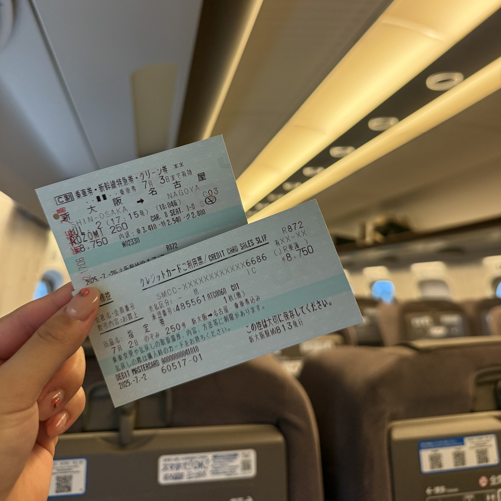

The third city I visited in Japan was Nagoya. I used the Shinkansen, the bullet train that runs all through out Japan. From Osaka to Nagoya, I got there in around 2 hours. This is very quite city and was not staying for long.


Japan, Nagoya 🇯🇵
The third city I visited in Japan was Nagoya. I used the Shinkansen, the bullet train that runs all through out Japan. From Osaka to Nagoya, I got there in around 2 hours. This is very quite city and was not staying for long.

But, one thing I had to try was the 'miso tonkatsu'. From a Youtuber I watch, I learned that the best food in Nagoya is this. So, I had to try and I LOVED IT. I think this menu was the best out of what I had in Japan.
After trying some gacha of Smiski and other cute stuff, I had to get on a bus. The bus that I reserved was an all nighters bus which goes to Nagoya to Tokyo. It was cheap and interesting so, I got a seat.